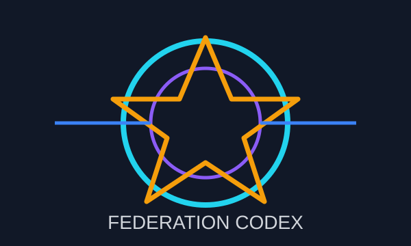

Church Orders
The religious guilds of the Federation, organized around divine service, invocations, holy scholarship, public example, and sacred authority.
A Federation archive for the worldbuilding, cultures, magic, guilds, and characters of Alterra.
The guild system turns archetypes into social institutions. Each card opens a lore entry about the organization, its culture, and its classifications.

The religious guilds of the Federation, organized around divine service, invocations, holy scholarship, public example, and sacred authority.
Gladiatorial institutions where combat is profession, spectacle, public identity, and sanctioned violence.
Academic research societies where spellcraft, seal theory, magical ethics, and institutional prestige shape wizard life.
Theater troupes, performance houses, carnivals, spies, thieves, and information brokers hidden beneath the glamour of the stage.
A civil rights organization protecting natural mages, challenging magical discrimination, and giving sorcerers a political voice.
The contract network that sends adventurers, specialists, guides, guards, and problem-solvers wherever the Federation needs them most.